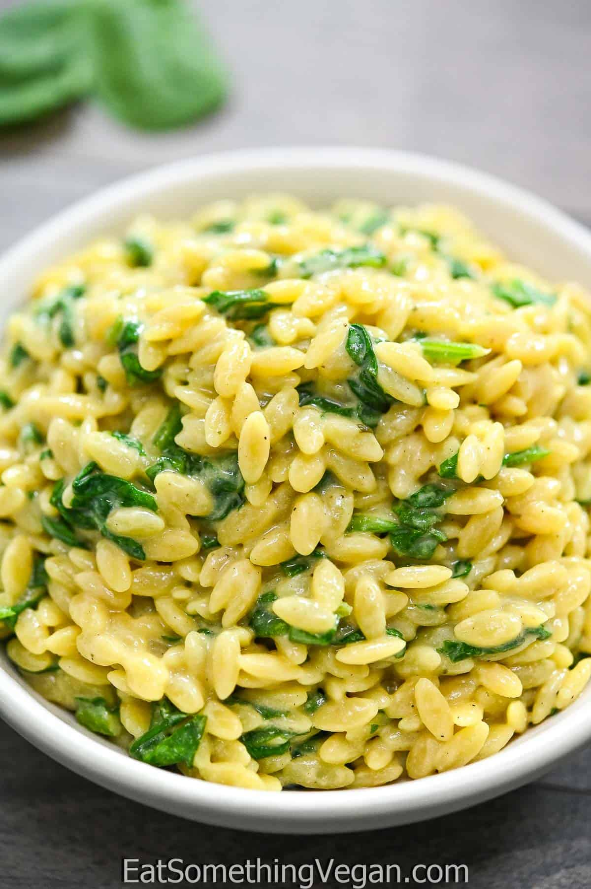

Spinach Orzo Recipe

Description
This is a quick and easy recipe, with a great way to get your veggies. Add whatever and however many veggies you want. It's so easy.
Full credit to Eat Something Vegan for the recipe! Visit the original recipe and more here.
Ingredients
- 2 cups veggie broth
- 1 cup oat milk
- 1 cup orzo pasta
- 2 tbsp. nutritional yeast
- 4 oz or more baby spinach, roughly chopped
- 1/2 tsp salt or to taste
- 1/4 tsp pepper or to taste
Recipe
- Combine the vegetable broth and oat milk in a medium saucepan and bring to a boil.
- Add the orzo and cook for 8-10 minutes, stirring occasionally.
- Reduce the heat to medium-low and add the nutritional yeast, salt, pepper, and spinach. Keep cooking for about 3 minutes, until the spinach wilts down.
- Taste the orzo. Add salt and pepper to taste.
- Stir, and remove from heat. Serve.